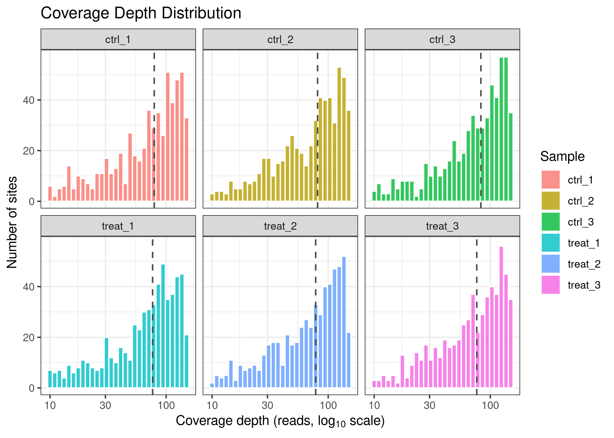
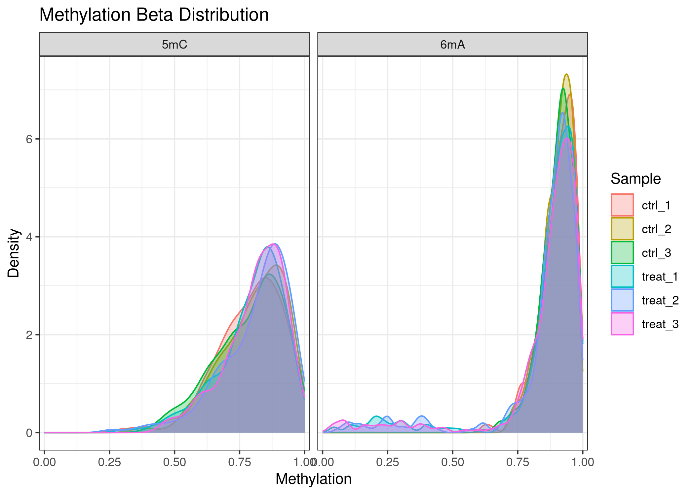
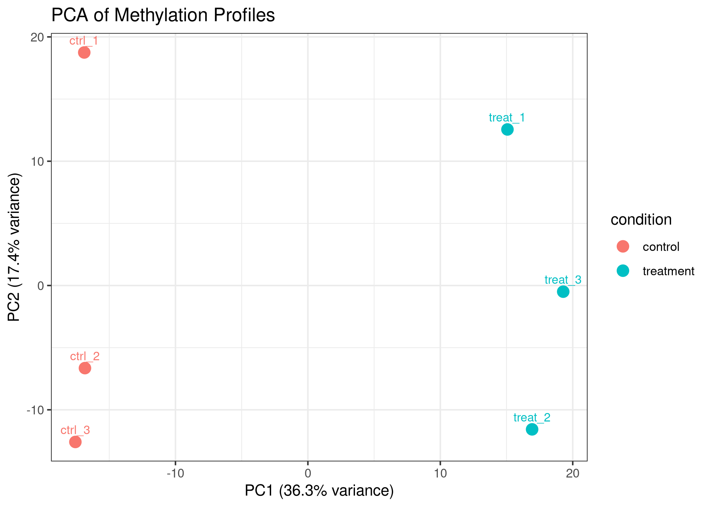
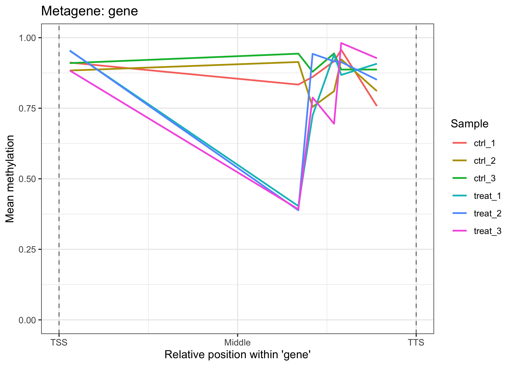
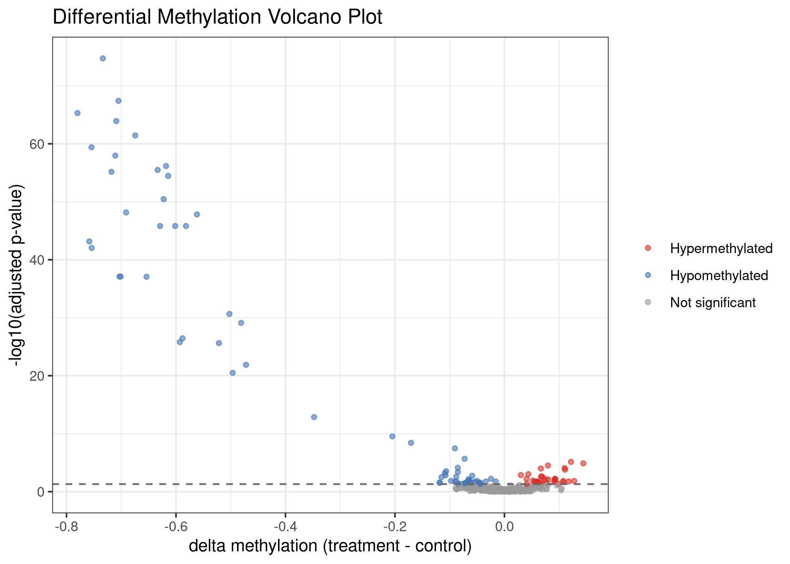
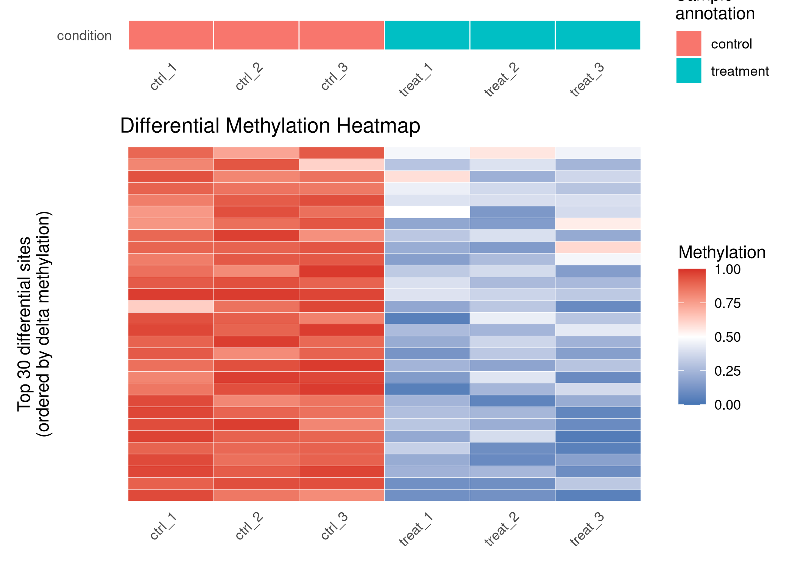

commaKit (Comparative Microbial Methylomics Analysis Kit) is an R/Bioconductor-style package for comparative analysis of bacterial DNA methylation from Oxford Nanopore sequencing data.
commaKit starts from per-sample methylation evidence - usually modkit pileup bedMethyl files - and builds a commaData object, an S4 class extending RangedSummarizedExperiment. From that shared container, the package supports quality control, genomic annotation, differential methylation testing, region-level summaries, enrichment analysis, export, and visualization for 6mA, 5mC, and 4mC methylation in monoploid microbial genomes.
commaKit is under active development and is not yet on Bioconductor. Install from GitHub for now.
Why commaKit?
Nanopore methylation callers can report rich modified-base evidence, but most analysis workflows still leave users to reconcile caller-specific formats, coverage filters, genome coordinates, methylation contexts, sample metadata, and downstream statistics by hand. commaKit provides one R-native container and a coherent workflow for comparative microbial methylomics:
- import modkit, Dorado, or Megalodon output into a single
commaDataobject; - keep raw methylation and count evidence together with genomic ranges and sample metadata;
- analyze methylation by modification context, such as
6mA_GATCor5mC_CCWGG; - test for differential methylation with
methylKit,limma, or a native quasi-binomial F-test backend; - annotate methylation sites to genes or other genomic features;
- summarize sites over regions and export BED-compatible tracks;
- visualize coverage, beta distributions, PCA, genome tracks, metagene/TSS profiles, volcano plots, and heatmaps.
The package is designed for bacterial and archaeal genomes where methylation is often motif-associated, strand-aware, and close to fully methylated or unmethylated at individual sites.
Installation
# Install the development version from GitHub.
# commaKit is not yet on Bioconductor.
if (!requireNamespace("devtools", quietly = TRUE)) {
install.packages("devtools")
}
devtools::install_github("carl-stone/commaKit")Input contract
commaKit is intentionally strict about the evidence it imports. The most common path is modkit pileup bedMethyl:
- Use complete modkit pileup bedMethyl files, not generic BED-like tables.
- Preserve tab-delimited bedMethyl structure so blank required fields are not shifted into the wrong columns.
- For modkit input,
Nvalid_cov,Nmod,Ncanonical, andNother_modare the authoritative count fields. Methylation beta values are computed fromNmod / Nvalid_cov, not from the derivedfraction_modifiedpercentage. - Genome names must match imported methylation chromosomes. If the methylation files contain chromosomes absent from
genome, construction stops with a clear error instead of guessing. - Direct Dorado BAM parsing requires mapped BAM files with MM/ML tags preserved; in practice, many users will prefer to run modkit first and import the resulting bedMethyl files.
A typical commaData() call needs a named vector of per-sample files, a sample metadata table, genome lengths or a FASTA/BSgenome, and optionally annotation and motif information:
library(commaKit)
files <- c(
ctrl_1 = "path/to/ctrl_rep1.bed",
ctrl_2 = "path/to/ctrl_rep2.bed",
ctrl_3 = "path/to/ctrl_rep3.bed",
treat_1 = "path/to/treat_rep1.bed",
treat_2 = "path/to/treat_rep2.bed",
treat_3 = "path/to/treat_rep3.bed"
)
col_data <- data.frame(
sample_name = names(files),
condition = c(
"control", "control", "control",
"treatment", "treatment", "treatment"
),
replicate = c(1L, 2L, 3L, 1L, 2L, 3L)
)
obj <- commaData(
files = files,
colData = col_data,
genome = "path/to/genome.fa",
annotation = "path/to/genes.gff3",
motif = "GATC",
min_coverage = 5L,
caller = "modkit"
)For import details and common failure modes, see vignette("import-troubleshooting", package = "commaKit").
Quick start with example data
commaKit includes a small synthetic dataset for examples and tests. It contains 588 methylation sites across six samples on a 100 kb toy chromosome: 393 6mA/GATC sites and 195 5mC/CCWGG sites.
library(commaKit)
data(comma_example_data)
comma_example_data
#> class: commaData
#> sites: 588 | samples: 6
#> mod types: 5mC, 6mA
#> motifs: CCWGG, GATC
#> mod contexts: 5mC_CCWGG, 6mA_GATC
#> conditions: control, treatment
#> genome: 1 chromosome (100,000 bp total)
#> annotation: 5 features
#> motif sites: none
#> caller: modkit
#> min_coverage: 5The core accessors expose sample metadata, genomic site metadata, modification contexts, beta values, coverage, and raw count assays:
modContexts(comma_example_data)
#> [1] "5mC_CCWGG" "6mA_GATC"
sampleInfo(comma_example_data)[, c("sample_name", "condition", "replicate")]
#> sample_name condition replicate
#> ctrl_1 ctrl_1 control 1
#> ctrl_2 ctrl_2 control 2
#> ctrl_3 ctrl_3 control 3
#> treat_1 treat_1 treatment 1
#> treat_2 treat_2 treatment 2
#> treat_3 treat_3 treatment 3
dim(methylation(comma_example_data))
#> [1] 588 6
dim(siteCoverage(comma_example_data))
#> [1] 588 6Standard workflow
1. Quality control
Start by checking per-sample methylation distributions and coverage.
ms <- methylomeSummary(comma_example_data)
ms[, c(
"sample_name", "condition", "mean_beta", "median_beta",
"frac_methylated", "n_covered"
)]
#> sample_name condition mean_beta median_beta frac_methylated n_covered
#> 1 ctrl_1 control 0.8654839 0.8929141 0.9897959 588
#> 2 ctrl_2 control 0.8705692 0.8959600 0.9948980 588
#> 3 ctrl_3 control 0.8638033 0.8918851 0.9897959 588
#> 4 treat_1 treatment 0.8357998 0.8864176 0.9421769 588
#> 5 treat_2 treatment 0.8369054 0.8893089 0.9404762 588
#> 6 treat_3 treatment 0.8388398 0.8866568 0.9455782 588
plot_coverage(comma_example_data)
plot_methylation_distribution(comma_example_data)
plot_pca() uses M-values internally rather than raw beta values, which is more stable for distance-based analyses when many sites are near 0 or 1.
plot_pca(comma_example_data, color_by = "condition")
2. Annotate methylation sites
annotateSites() maps 1-bp methylation sites to genomic features with GenomicRanges::findOverlaps(). It keeps all associations in list-columns rather than collapsing each site to a single closest feature.
annotated <- annotateSites(comma_example_data, keep = "overlap")
si <- siteInfo(annotated)
mean(lengths(si$feature_names) > 0)
#> [1] 0.02891156
plot_metagene(comma_example_data, feature = "gene")
3. Test differential methylation
diffMethyl() follows the familiar pattern used by many Bioconductor workflows: fit the model, then extract and filter a results table. For the current v1 API, formulas must name one two-level comparison variable, such as ~ condition. Multi-factor formulas are intentionally deferred.
cd_dm <- diffMethyl(
comma_example_data,
formula = ~condition,
mod_type = "6mA"
)
res <- results(cd_dm)
sig <- filterResults(cd_dm, padj = 0.05, delta_beta = 0.2)
cat("Total 6mA sites tested:", nrow(res), "\n")
#> Total 6mA sites tested: 588
cat("Significant sites:", nrow(sig), "\n")
#> Significant sites: 31
head(res[
order(res$dm_padj),
c("chrom", "position", "mod_context", "dm_delta_beta", "dm_padj")
])
#> chrom position mod_context dm_delta_beta dm_padj
#> 196 chr_sim 50176 6mA_GATC -0.7336497 1.849154e-75
#> 287 chr_sim 70003 6mA_GATC -0.7050844 3.896483e-68
#> 260 chr_sim 63550 6mA_GATC -0.7799241 5.006897e-66
#> 249 chr_sim 61440 6mA_GATC -0.7090099 1.178364e-64
#> 347 chr_sim 86016 6mA_GATC -0.6743832 3.661541e-62
#> 9 chr_sim 2180 6mA_GATC -0.7543758 4.024452e-60Effect sizes are reported on the beta scale, and multiple-testing correction is applied genome-wide across all tested modification contexts in the call.
plot_volcano(res)
plot_heatmap(res, cd_dm, n_sites = 30L)
4. Summarize regions and export
Use summarizeRegions() when site-level methylation should be aggregated over features, windows, or other genomic intervals.
regions <- GenomicRanges::GRanges(
seqnames = "chr_sim",
ranges = IRanges::IRanges(start = c(1, 50001), end = c(50000, 100000)),
region_id = c("left_half", "right_half")
)
region_summary <- summarizeRegions(comma_example_data, regions)
head(region_summary)
#> region_id seqnames start end width strand region_region_id sample_name
#> 1 region_1 chr_sim 1 50000 50000 * left_half ctrl_1
#> 2 region_1 chr_sim 1 50000 50000 * left_half ctrl_2
#> 3 region_1 chr_sim 1 50000 50000 * left_half ctrl_3
#> 4 region_1 chr_sim 1 50000 50000 * left_half treat_1
#> 5 region_1 chr_sim 1 50000 50000 * left_half treat_2
#> 6 region_1 chr_sim 1 50000 50000 * left_half treat_3
#> n_sites total_mod_counts total_valid_coverage region_methylation
#> 1 284 19162 22221 0.8623374
#> 2 284 19307 22109 0.8732643
#> 3 284 20394 23791 0.8572149
#> 4 284 19479 22904 0.8504628
#> 5 284 18494 21858 0.8460975
#> 6 284 18864 22536 0.8370607
#> total_canonical_counts
#> 1 3059
#> 2 2802
#> 3 3397
#> 4 3425
#> 5 3364
#> 6 3672Export browser-compatible methylation tracks with writeBED():
writeBED(cd_dm, file = "results_6mA.bed", sample = "ctrl_1", mod_type = "6mA")5. Enrich annotated differential methylation results
enrichMethylation() runs GO or KEGG enrichment on genes associated with differentially methylated sites. The bundled example data use synthetic gene IDs, so real biological enrichment examples require real bacterial annotations and identifier mappings.
cd_dm <- annotateSites(cd_dm, keep = "overlap")
enr <- enrichMethylation(
cd_dm,
ont = "BP",
gene_role = "target"
)For KEGG workflows, prefer the offline mapping path so routine analyses do not depend on live API calls:
id_map <- buildKEGGGeneIDMap(
"eco",
OrgDb = org.EcK12.eg.db::org.EcK12.eg.db
)
kegg_t2g <- buildKEGGTermGene("eco", file = "kegg_eco.rds", id_map = id_map)
enr_kegg <- enrichMethylation(
cd_dm,
kegg_term2gene = kegg_t2g$term2gene,
kegg_term2name = kegg_t2g$term2name
)The commaData object
commaData extends RangedSummarizedExperiment:
- rows are 1-bp genomic methylation sites stored in
rowRanges(); - columns are samples stored in
colData(); - assays store methylation beta values, coverage, and count evidence;
- site metadata include
mod_typeandmotif; -
mod_contextis computed frommod_typeandmotif, for example6mA_GATC; when motif is unavailable, the modification type is used alone; - named assay and result layers preserve derived transformations and differential methylation runs without overwriting raw evidence.
assayLayers(comma_example_data)
#> DataFrame with 4 rows and 10 columns
#> assay role type source
#> <character> <character> <character> <character>
#> 1 methylation methylation filtered_beta synthetic_example
#> 2 coverage coverage observed_total_cover.. synthetic_example
#> 3 mod_counts mod_counts reconstructed_counts synthetic_example
#> 4 canonical_counts canonical_counts reconstructed_counts synthetic_example
#> is_default default_for parent_assays method
#> <logical> <CharacterList> <CharacterList> <character>
#> 1 TRUE methylation coverage simulation
#> 2 TRUE coverage simulation
#> 3 TRUE mod_counts methylation,coverage round_beta_times_cov..
#> 4 TRUE canonical_counts coverage,mod_counts coverage_minus_mod_c..
#> timestamp package_version
#> <character> <character>
#> 1 NA 0.2.0
#> 2 NA 0.2.0
#> 3 NA 0.2.0
#> 4 NA 0.2.0
resultLayers(cd_dm)
#> DataFrame with 1 row and 18 columns
#> name role type source is_default
#> <character> <character> <character> <character> <logical>
#> 1 diffMethyl diffMethyl differential_methyla.. diffMethyl TRUE
#> method formula reference treatment mod_context
#> <character> <character> <character> <character> <CharacterList>
#> 1 methylkit ~condition control treatment
#> mod_type motif p_adjust_method min_coverage alpha
#> <CharacterList> <CharacterList> <character> <integer> <numeric>
#> 1 6mA BH 5 0.5
#> result_cols timestamp package_version
#> <CharacterList> <character> <character>
#> 1 dm_pvalue,dm_padj,dm_delta_beta,... 2026-07-03 07:08:14 .. 0.2.0Raw evidence assays are treated as canonical input evidence. Transformations, when created, should live as named derived assay layers. Filtering returns subset commaData objects rather than hidden lazy views.
Multi-modification analyses
A single object can hold multiple modification types and motifs. Most analysis and plotting functions accept mod_type, motif, or mod_context filters.
modTypes(comma_example_data)
#> [1] "5mC" "6mA"
modContexts(comma_example_data)
#> [1] "5mC_CCWGG" "6mA_GATC"
obj_6mA <- filterSites(comma_example_data, mod_context = "6mA_GATC")
obj_6mA
#> class: commaData
#> sites: 393 | samples: 6
#> mod types: 6mA
#> motifs: GATC
#> mod contexts: 6mA_GATC
#> conditions: control, treatment
#> genome: 1 chromosome (100,000 bp total)
#> annotation: 5 features
#> motif sites: none
#> caller: modkit
#> min_coverage: 5For a complete joint 6mA + 5mC workflow, see vignette("multiple-modification-types", package = "commaKit").
Documentation
?commaKit
?commaData
?diffMethyl
?resultsVignettes:
-
vignette("getting-started", package = "commaKit")- end-to-end analysis from example data. -
vignette("understanding-commaData", package = "commaKit")- object model, assays, provenance, and result layers. -
vignette("import-troubleshooting", package = "commaKit")- modkit, Dorado, Megalodon, genome, and annotation input issues. -
vignette("multiple-modification-types", package = "commaKit")- joint analysis of multiple modification contexts.
Current status and limitations
| Area | Status |
|---|---|
| Package version |
0.2.0 development baseline |
| Distribution | GitHub only; not yet submitted to Bioconductor |
| Primary input | modkit pileup bedMethyl |
| Optional inputs | Dorado BAM with MM/ML tags; Megalodon legacy output |
| Differential methylation | One two-level design variable for v1 |
| Example data | Synthetic, deterministic, useful for tests and tutorials |
| Real-data validation | Planned; depends on selecting a redistributable bacterial dataset |
| Performance evidence | Planned before broader release confidence |
Roadmap:
| Version | Phase | Status |
|---|---|---|
| 0.2.0 | Schema v2, commaKit rename, result layers, assay provenance | Done |
| 0.2.x | Test quality, parser hardening, docs synchronization | In progress |
| 0.x.y | Real-data examples, performance benchmarks, Bioconductor hardening | Planned |
| 0.99.0 | Bioconductor submission version | Future |
| 1.0.0 | Stable public release after external confidence | Future |
Support
Use GitHub Issues for bug reports, feature requests, and documentation problems:
https://github.com/carl-stone/commaKit/issues
For import problems, include the caller (modkit, dorado, or megalodon), the relevant command used upstream, a small excerpt of input if possible, and the full error message.